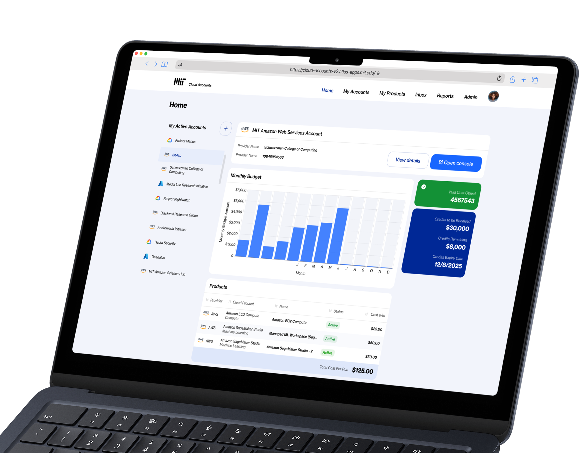
Easy configuration of cloud products for approved research accounts
MIT researchers receive project budgets for cloud computing resources. The Cloud Accounts portal enables self-service access to Google Cloud, Azure, and AWS services, allowing researchers to provision tools from data storage to machine learning platforms.
My Impact
Researchers and IT admins are impacted by inefficient cloud account setup. Researchers cannot independently configure cloud services due to system complexity, requiring IT admin assistance for every project setup. Configuration complexity creates a bottleneck where researchers wait on admin support while admins handle routine requests instead of strategic work.
Understanding Current Context
While exploring the Cloud Account app, I found the user experience to be straightforward and user-friendly.
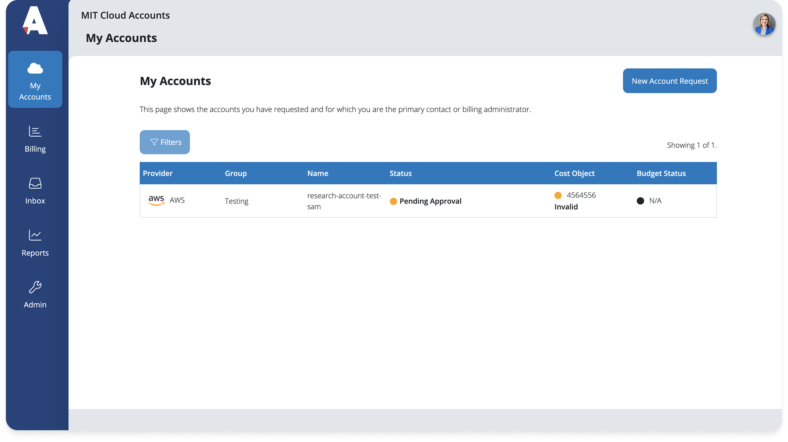
Current Workflow Configuration
However, the configuration platform can be complicated and confusing for users trying to set up their cloud services. I began brainstorming ways to simplify this complex workflow within the Cloud Accounts portal, guiding users step-by-step for a better experience.
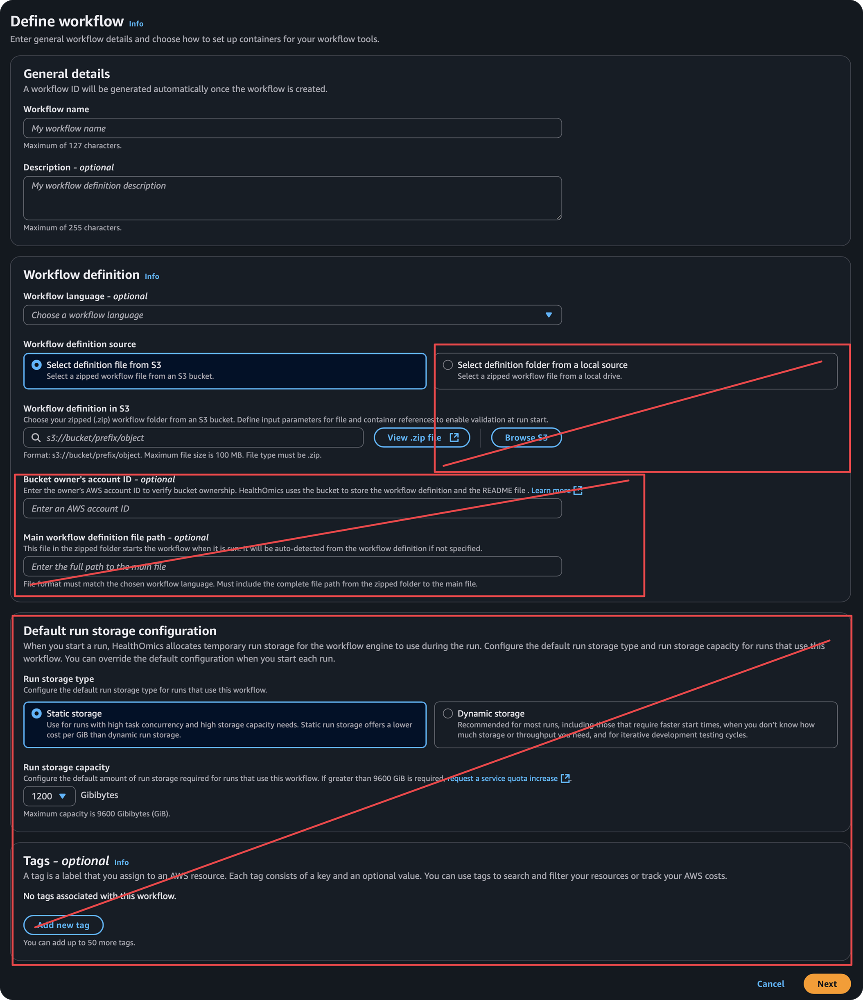
Identifying the Users
During the discovery phase, we created user personas to better understand and empathise with the end users.


Product & Account Statuses
We spent time learning about the backend technical processes, such as how a product progresses through the application. This provided deeper insights into the user journey and their interactions.
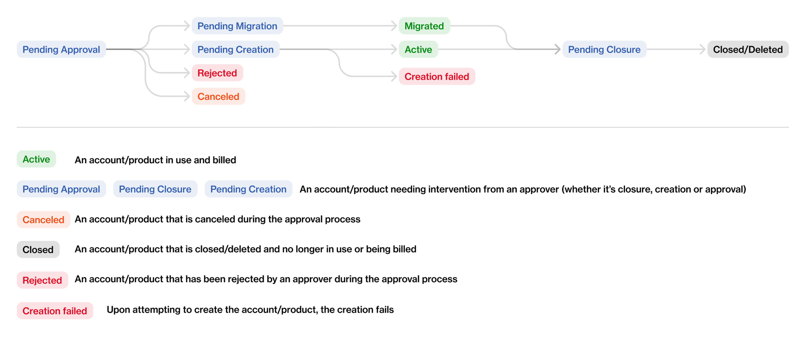
Initial Mockups
In the first round of mockups, we utilised existing UI components and incorporated the product flow into the current account journey.
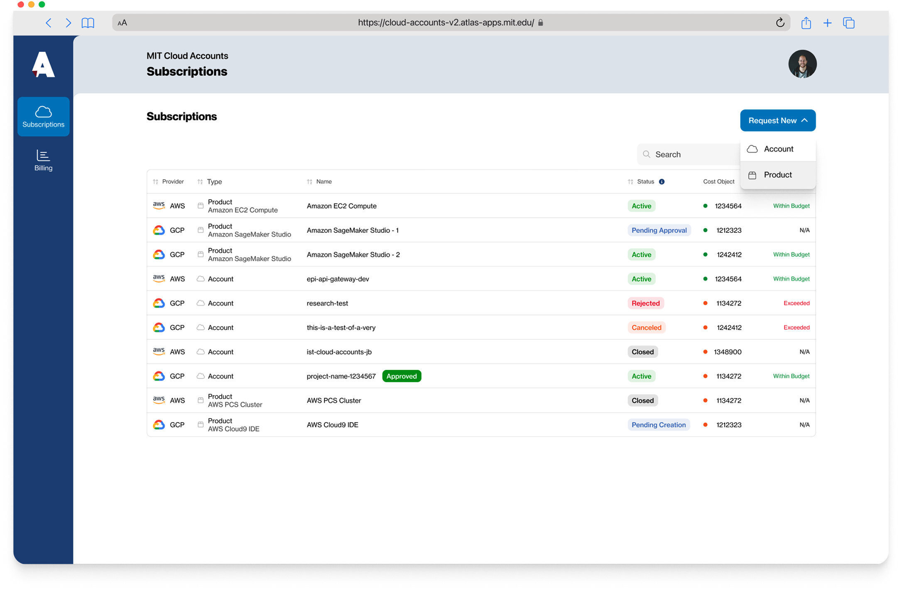
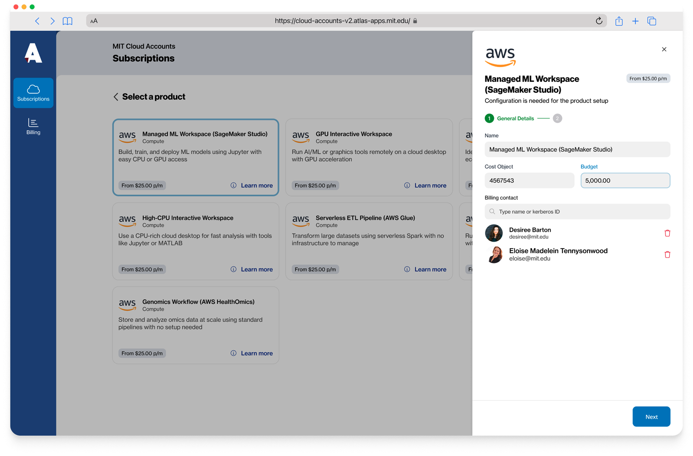
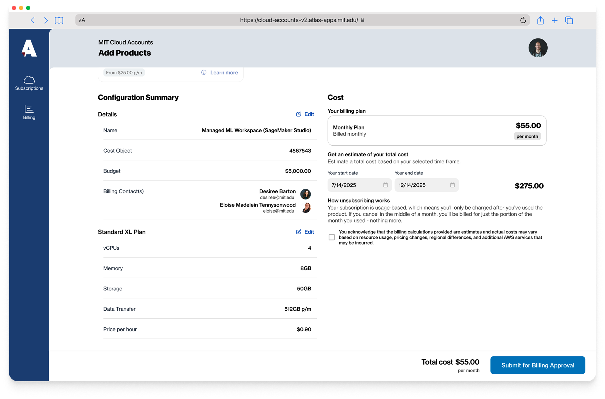
Enhanced Mockups
The developers indicated that the Cloud Accounts platform would require a rebuild with a new component library, giving us a chance to enhance the UI. Additionally, subject matter experts suggested we assist researchers in finding the most cost-effective product options for specific timeframes. Consequently, we decided to add a dashboard screen to show researchers how their products are being utilised in relation to their budget.
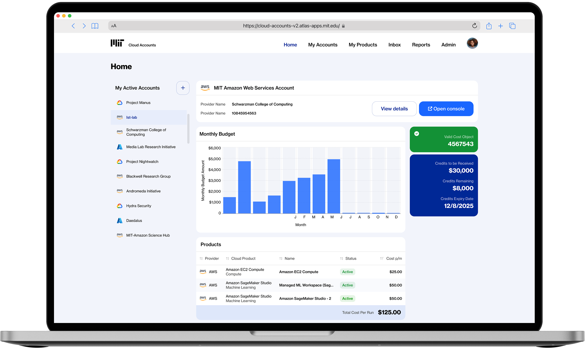
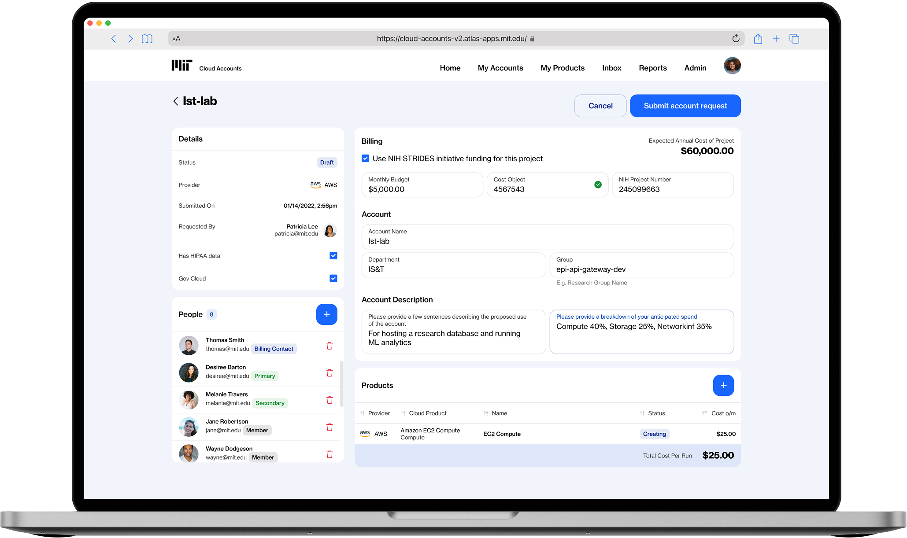
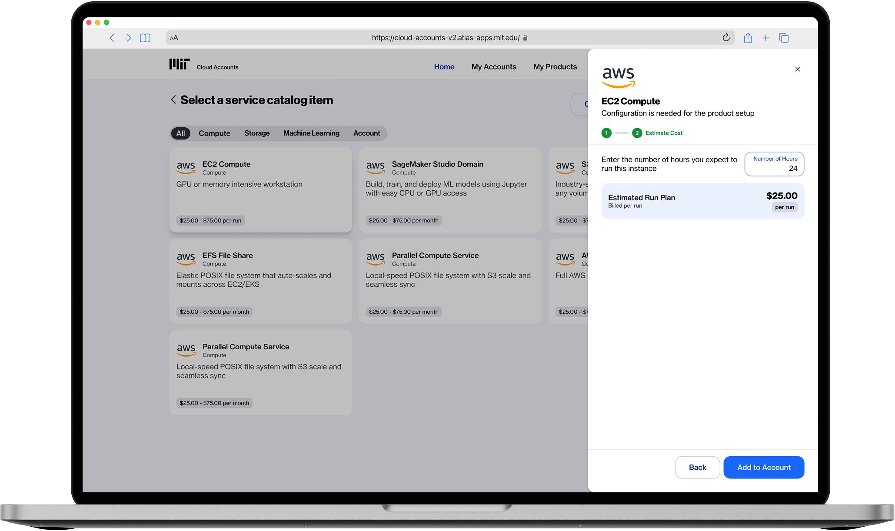
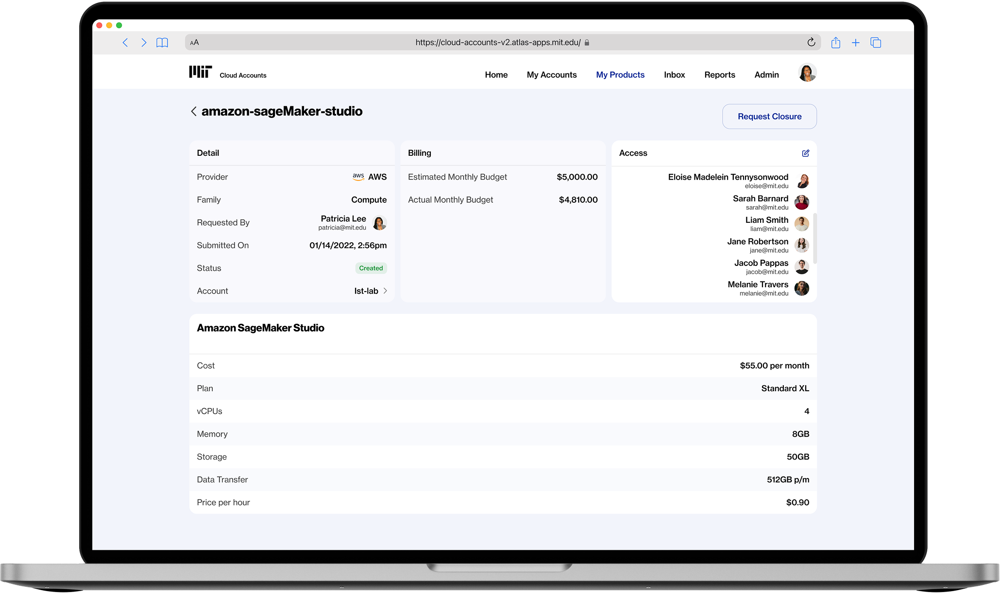
Quality Assurance Testing
After finalising the mockups for the MVP, I created a QA board on GitHub to track requirements and bugs.
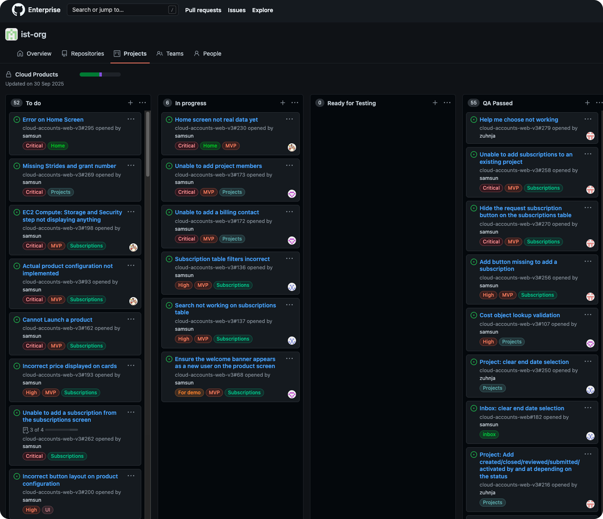
AWS Presentation
Our cloud architect showcased the live application at an AWS re:Invent session, receiving highly positive feedback.
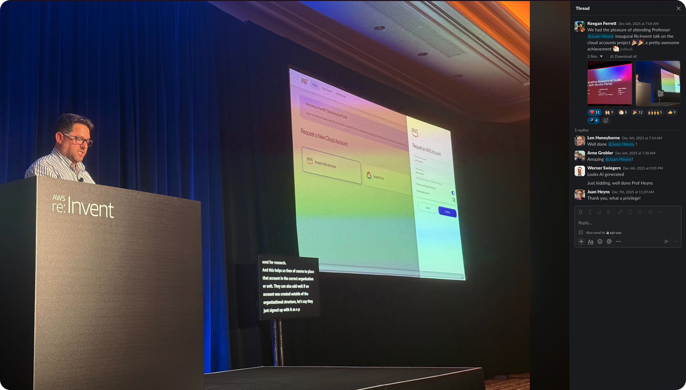